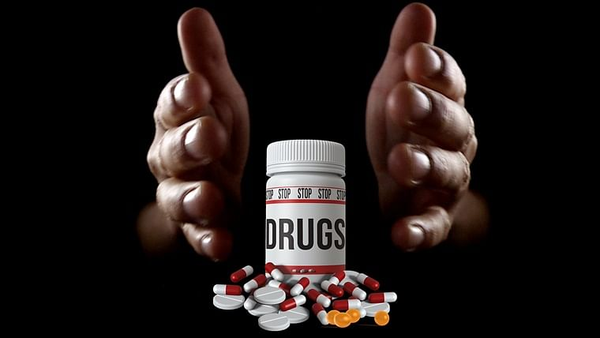
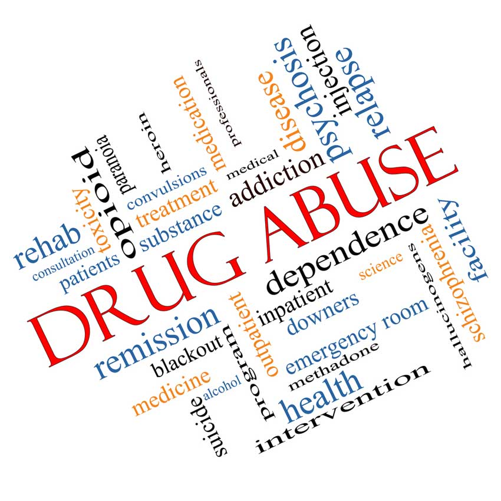

The solution
\
parents can prevent drug abuse! Parents
are the best protection youngsters can have
against drug abuse. Prevention is the process,
which builds into children a resistance to abusing
drugs, so that drug use never begins. Prevention is
a simple concept but it requires constant work to be
successful. Prevention is a positive process. It is a
process, which cannot be started too soon. Research indicates
that children and teenagers diagnosed with ADHD are at greater
risk to alcohol and drug abuse than children and teenagers in the
normal population. The following are important elements in helping
kids resist becoming involved with drugs and alcohol:
- Love and affectionate as the child grows.
- Consistent and fair discipline.
- Open channels of communication for thoughts and feelings.
- Opportunities for successful experiences at home and in school.
- A stable family atmosphere (family time together, family rituals).
- Tolerance of the child's mistakes (no put-downs).
-
Models of strong, thoughtful and feeling adults.
-
Accurate information about the problems of growing up today (sexuality, drugs, crime, etc.)
There is NOTHING more important in preventing drug abuse than spending time with your children. Take time to do what they enjoy, to share some skills, to build family rituals and rapport.
For addicted people
consder taking already addicted people to rehab
center provides. rehab center provides a place for
someone to live while receiving addiction treatment
on-site. Inpatient care is the best option for most
people because it removes them from triggers in everyday life.
Inpatient facilities range from a residential environment at a
luxury rehab center to the sterile setting of a hospital. Many
of them fall somewhere in between, providing a home-like feel so
recovering individuals feel comfortable during their stay.
The major benefit of inpatient addiction treatment is that it immerses
someone in the healing process. Everything they do is related to recovery.
Through daily therapy and sober free time, they learn to replace substance abuse with healthier habits.

METHODOLOGY AND SOLUTIONS
data gathering for interpretation of information
posses a lot of threats.the drug abuse and addiction
research exposes one to a number of challenges.they
include:methodology problems,complications,ethical
standards,social context and lack of personal security,
it requires me to expose and interview people in the streets
and who take drugs to find out the reason why they do it and
how they feel and those people are dangerous this is one of the
challenges i will be facing.firstly i will need to pause and pretend
that am in the same race together with them only then i will be able
to collect the information i need from them.

technology and scope
we can reach the youths through the social
media and create some short drama goups on
the television by creating anmated cartoons
to catter for different ages and radios to show
the badside of drug abuse and how negative it can
impact their lives and by printing out the banners
and put them in the streets
advantanges of technology
its easy to reach many people in a short period of time and its cheap in that way
it comes to a conclusion that drug abuse and addiction is a social problem that results into un wanted effects to the users and to the people in the community. however people should stop thinking that the drug addicts are morally challenged ,the drug abuse develops to a disease that affects the brain thus stopping a drug addict is not just an easy task its not a matter of will power since drug abuse can be treated, all members of the society should join hands in helping the victims to recover and also come up with a way to mitigate the problem of drug abuse and addiction